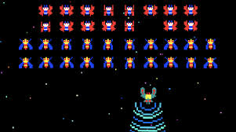

Donkey Kong
A 1981 platform game developed and published by Nintendo for arcades. As Mario (occasionally referred to as "Jumpman" at the time), the player runs and jumps on platforms and climbs ladders to ascend a construction site in New York City and rescue Pauline (occasionally referred to as "The Lady" at the time) from the giant gorilla Donkey Kong. It is the first game in the Donkey Kong series and Mario's first appearance in a video game.
A 1981 platform game developed and published by Nintendo for arcades. As Mario (occasionally referred to as "Jumpman" at the time), the player runs and jumps on platforms and climbs ladders to ascend a construction site in New York City and rescue Pauline (occasionally referred to as "The Lady" at the time) from the giant gorilla Donkey Kong. It is the first game in the Donkey Kong series and Mario's first appearance in a video game.

Galaga
A 1981 fixed shooter video game developed and published by Namco for Japanese and European arcades; in North America, it was distributed by Midway Manufacturing. It is the sequel to Galaxian (1979), Namco's first major video game hit in arcades. Controlling a starship, the player is tasked with destroying the Galaga forces in each stage while avoiding enemies and projectiles. Some enemies can capture a player's ship via a tractor beam, which can be rescued by another ship to give the player a "dual fighter" with additional firepower.
A 1981 fixed shooter video game developed and published by Namco for Japanese and European arcades; in North America, it was distributed by Midway Manufacturing. It is the sequel to Galaxian (1979), Namco's first major video game hit in arcades. Controlling a starship, the player is tasked with destroying the Galaga forces in each stage while avoiding enemies and projectiles. Some enemies can capture a player's ship via a tractor beam, which can be rescued by another ship to give the player a "dual fighter" with additional firepower.
